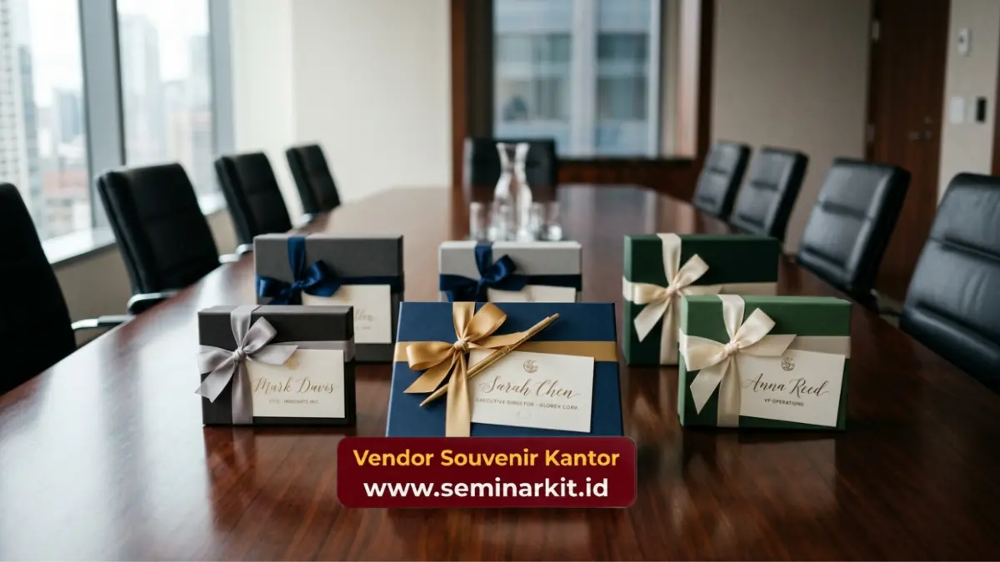

Souvenir untuk klien saat kunjungan bisnis paling efektif berupa welcome kit ringkas seperti drinkware, alat tulis, atau produk elektronik kecil yang dapat langsung diserahkan di meja resepsionis atau ruang meeting.
Souvenir ini memberikan kesan hangat sekaligus profesional sejak awal pertemuan berlangsung.
- Souvenir kunjungan bisnis sebaiknya berukuran ringkas agar praktis dibawa klien setelah pertemuan.
- Waktu penyerahan yang ideal adalah di awal pertemuan atau saat klien akan meninggalkan kantor.
- Welcome kit dapat berisi kombinasi drinkware, alat tulis, dan kartu ucapan resmi perusahaan.
- Penempatan souvenir di ruang meeting turut memperkuat kesan persiapan yang matang dari tuan rumah.
- Konsistensi branding pada seluruh item welcome kit memperkuat identitas perusahaan di mata klien.
Apa Souvenir yang Cocok Diberikan Saat Klien Berkunjung ke Kantor?
Souvenir yang cocok diberikan saat klien berkunjung ke kantor adalah produk ringkas dan mudah dibawa seperti tumbler custom logo, notebook kecil, atau set alat tulis dalam kemasan simpel, karena tamu bisnis umumnya membawa barang bawaan terbatas.
Beberapa opsi yang umum digunakan perusahaan untuk menyambut kunjungan klien meliputi tumbler atau botol minum dengan cetak logo perusahaan, notebook ukuran ringkas yang dapat langsung digunakan mencatat hasil pertemuan.
Serta pulpen premium yang praktis dibawa dalam tas kerja. Produk-produk ini dipilih karena fungsinya yang relevan dengan aktivitas pertemuan bisnis itu sendiri.
Selain barang fisik, penambahan kartu ucapan resmi berisi nama perusahaan dan pesan singkat turut memperkuat kesan personal pada souvenir yang diberikan.
Bagaimana Menyusun Welcome Kit yang Praktis untuk Tamu Bisnis?
Welcome kit yang praktis untuk tamu bisnis disusun dengan memilih dua hingga tiga item fungsional dalam satu kemasan ringkas, sehingga tetap mudah dibawa tanpa terkesan berlebihan.
Langkah penyusunan welcome kit yang umum diterapkan:
- Tentukan satu item utama sebagai fokus, misalnya drinkware atau alat tulis premium.
- Tambahkan satu item pelengkap yang relevan, seperti notebook kecil atau kartu nama holder.
- Gunakan kemasan tas kecil atau kotak ringkas dengan cetak logo perusahaan pada bagian luar.
- Sisipkan kartu ucapan singkat sebagai sentuhan personal dari perusahaan tuan rumah.
- Pastikan seluruh item memiliki konsistensi warna dan desain agar terlihat satu kesatuan.
Welcome kit yang tersusun rapi mencerminkan tingkat persiapan dan profesionalisme perusahaan sejak kesan pertama pertemuan berlangsung.

Kapan Waktu Terbaik Menyerahkan Souvenir kepada Tamu Bisnis?
Waktu terbaik menyerahkan souvenir kepada tamu bisnis umumnya berada di awal pertemuan sebagai bentuk sambutan, atau di akhir pertemuan sebagai penutup yang berkesan, tergantung tujuan dan format acara.
Penyerahan di awal pertemuan cocok digunakan ketika perusahaan ingin membangun suasana hangat sejak awal diskusi, misalnya pada pertemuan pertama dengan calon mitra bisnis.
Sebaliknya, penyerahan di akhir pertemuan lebih sesuai untuk momen formal seperti penutupan negosiasi atau kunjungan resmi, karena souvenir menjadi simbol apresiasi atas waktu dan diskusi yang telah berlangsung.
Beberapa perusahaan juga memilih menempatkan souvenir langsung di meja meeting sebelum tamu tiba, sehingga tamu dapat melihatnya sejak awal duduk tanpa perlu proses penyerahan formal.
Bagaimana Souvenir Kunjungan Bisnis Memengaruhi Kesan Pertama Klien?
Souvenir kunjungan bisnis dapat memperkuat kesan pertama klien karena menjadi salah satu sentuhan fisik pertama yang diterima tamu selain sambutan verbal dari tim perusahaan.
Kesan pertama dalam pertemuan bisnis sering terbentuk dari detail-detail kecil, termasuk kerapian ruang meeting, sikap tim penyambut, dan kualitas souvenir yang diberikan.
Souvenir dengan kualitas rendah atau tampilan seadanya berpotensi menimbulkan persepsi kurang profesional, meskipun secara substansi pertemuan berjalan baik.
Sebaliknya, souvenir dengan finishing rapi dan relevansi fungsi yang tepat dapat memperkuat kepercayaan klien terhadap standar kerja perusahaan secara keseluruhan, bahkan sebelum diskusi bisnis inti dimulai.
Untuk mempersiapkan welcome kit dan souvenir untuk klien kunjungan bisnis dengan kualitas premium dan custom logo yang rapi, kunjungi vendorsouvenirkantor.web.id dan konsultasikan kebutuhan acara Anda.
Souvenir untuk klien saat kunjungan bisnis berperan penting dalam membangun kesan pertama yang profesional dan hangat. Pemilihan produk yang ringkas, waktu penyerahan yang tepat, serta konsistensi branding pada seluruh item welcome kit membantu memperkuat citra perusahaan sejak awal pertemuan berlangsung.

Banner promosi: klik gambar untuk langsung terhubung ke WhatsApp tim sales.